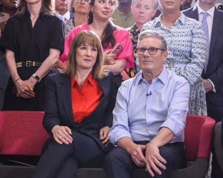

Monday
As someone who enjoys the women’s tennis at Wimbledon, so to speak, the tournament’s opening days are an annual joy and this week has been electric. Emma Raducanu leads the rise in British women powering up the world rankings, which makes the era of women’s tennis I grew up in – I have a lot of time for Jo Durie , but those were hard years – seem like the 19th century. Today, after two stunning opening-round matches, Raducanu will meet Aryna Sabalenka , the mighty Belarusian world No 1, which means tomorrow I will be on court one (in the park) knocking imaginary clay dust from my shoes and pretending to be in the final.
If the tennis is sublime, the crowd so far has been slightly under par – although it’s early days. Last year, the title of Wimbledon best dressed went, for my money, to Greta Gerwig, wearing a tan suit the provenance of which I still can’t track down, as well as Zendaya in Ralph Lauren and Julia Roberts in Gucci. This week in the royal box and around the grounds we’ve had Cate Blanchett, who is welcome in any setting, Olivia Rodrigo and Russell Crowe, who combed his hair and dug out a tie for Centre Court. ( Esquire ran a story about the £65,000 Rolex he was wearing, which, if it was intended to set us against him, won’t work – I won’t hear a word against Rusty.)
There were also, as usual, a high turn out of what my teenage tennis partner and I used to refer to nastily as Midweek Ladies, a crowd who, off-court, wear floral, ankle length dresses in pale shades and on court, are always one double fault away from losing their nerve and reverting to an underhand serve.
Tuesday
Everyone should watch My Mom Jayne, the documentary about Jayne Mansfield made by her daughter Mariska Hargitay, released this week on HBO Max and a jaw-dropper of revelations and sadness. You may know Hargitay from her role as Detective Olivia Benson in Law & Order: Special Victims Unit – I didn’t even know she was Mansfield’s daughter. She was three years old in 1967 when her 34-year-old mother was killed in a car crash outside New Orleans.
The film is heartbreaking, not least because Hargitay, who has no memories of her mother, was in the car with her siblings when it crashed. All three children survived and were raised by their father but, as Hargitay reports, she grew up feeling vaguely ashamed of her mother, a Hollywood sex bomb who spoke in a breathy voice that a generation later fell out of usage. As Hargitary digs into the history of the mother she never knew, she discovers Mansfield was an accomplished pianist and violinist, a brilliant, ambitious woman trapped by the only persona Hollywood allowed her – until now.
‘Perhaps this is why Westminster needs an HR department.’Photograph: Jack Hill/PA
Wednesday
Finally, someone has greeted the release of a new Brad Pitt movie not with praise-be gratitude for America’s ageing sweetheart, but by looking at Pitt’s success in shrugging off an allegation of domestic abuse. While in most of the entertainment press, Pitt’s new film is treated to the customary chuckling puff piece , New York magazine runs the headline Brad Pitt is Fooling You and proceeds to get into it: the actor’s image preservation, the crisis management PR he retains (former client: Johnny Depp) and the details of Angelina Jolie’s allegation that he assaulted her and one of their children on a private plane.
As the piece concludes, nobody cares. There’s been a vibe shift since #MeToo, which, let’s not forget, Brad Pitt’s production company, Plan B, aligned itself with by co-producing the movie adaptation of She Said, about the exposing of Harvey Weinstein – a sterling piece of allyship from America’s most sensitive male feminist, or something else entirely. Either way, nothing sticks. In the last five years, the worst coverage Pitt has had is for Bullet Train.
Thursday
There was a story in the Sun mid-week about Pitt’s ex Jennifer Anniston, or rather, about a 43-year-old man from Southampton who believed himself to be in a Facebook relationship with the Hollywood star, who had reached out to him asking for a loan.
That might have been your first clue, Paul, that something about this – hard to put your finger on what exactly – didn’t smell right. It wasn’t the first time the unfortunate victim had been targeted over social media by scam accounts claiming to be Hollywood stars. But when “Jennifer Anniston” sent him a copy of her driving licence, along with the message “I love you”, it was enough to clinch things and convince the hapless Facebook user he was at the start of a beautiful relationship. As requested, he sent the former Friends star the £200 of Apple gift cards she was asking for and never heard from her again.
Friday
Oh, to have the confidence of the Dalai Lama that we’ll all get a second go-around. Before his 90 th birthday this weekend, the Tibetan spiritual leader discussed arrangements for his successor , by which, per Buddhist beliefs, he means the body into which he will be reincarnated. This is as much a political as a spiritual consideration and in his address the Dalai Lama pushed back against the Chinese government’s insistence on pre-approving the reincarnation, remaining firm that when the time comes, he’ll be reincarnated in line with Tibetan tradition and without interference from Beijing.
He has also dangled some spoilers, suggesting, tantalisingly, that the new Dalai Lama may not be a baby, as he was, and – in what would represent a reboot more shocking than the new Dr Who and Ghostbusters combined – may not even be male. Which goes to show that even spiritual leaders these days have a canny knack for PR.
‘This is one’s heatwave wardrobe, I believe it’s called ‘showing some skin’.Photograph: Jane Barlow/AFP/Getty Images